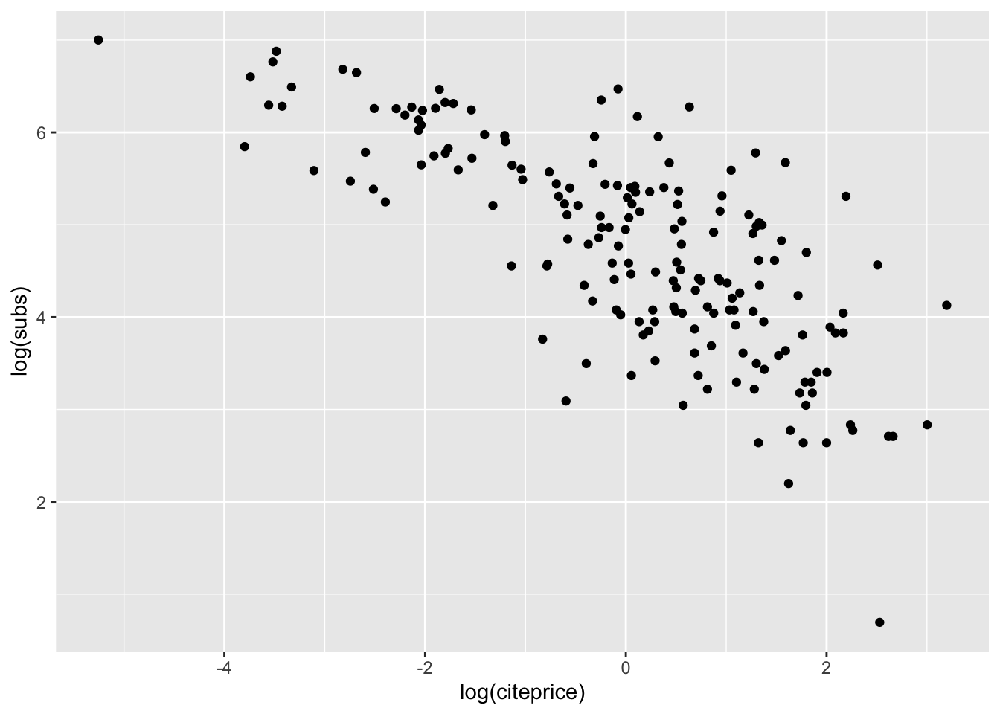
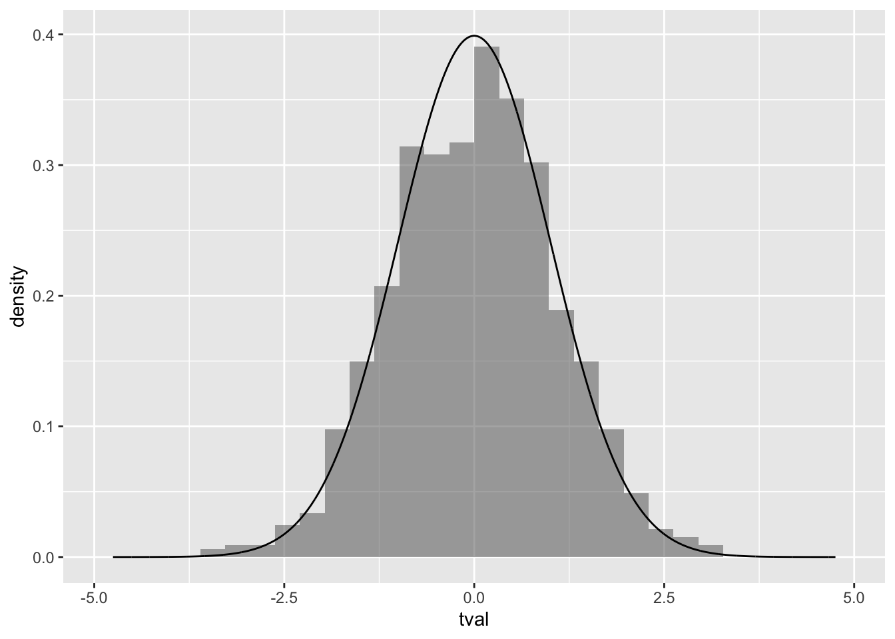
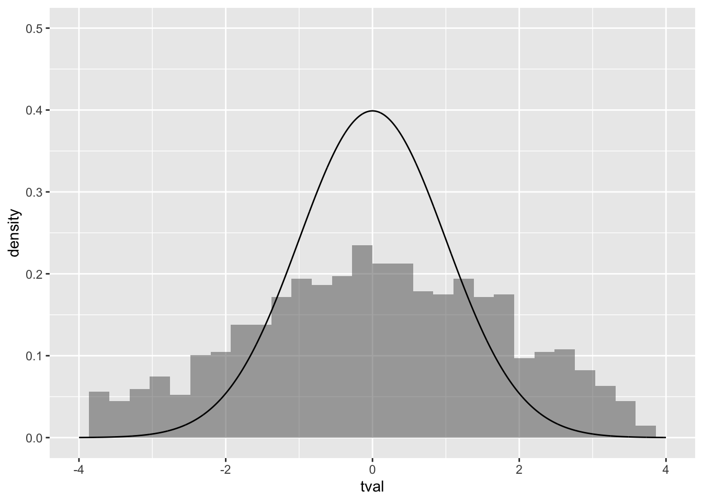
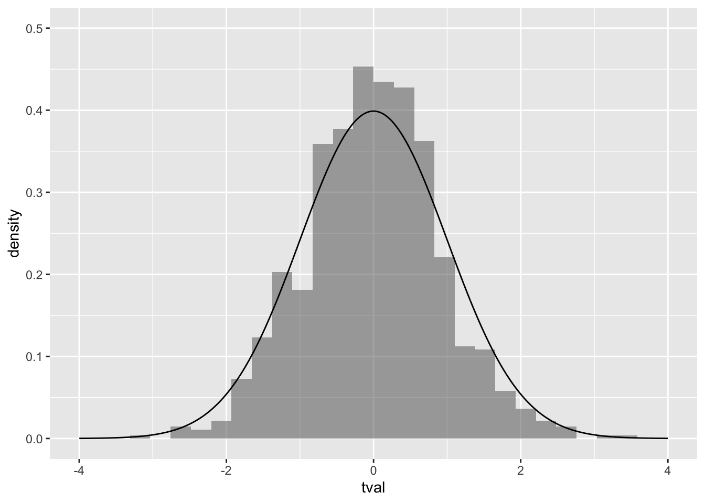
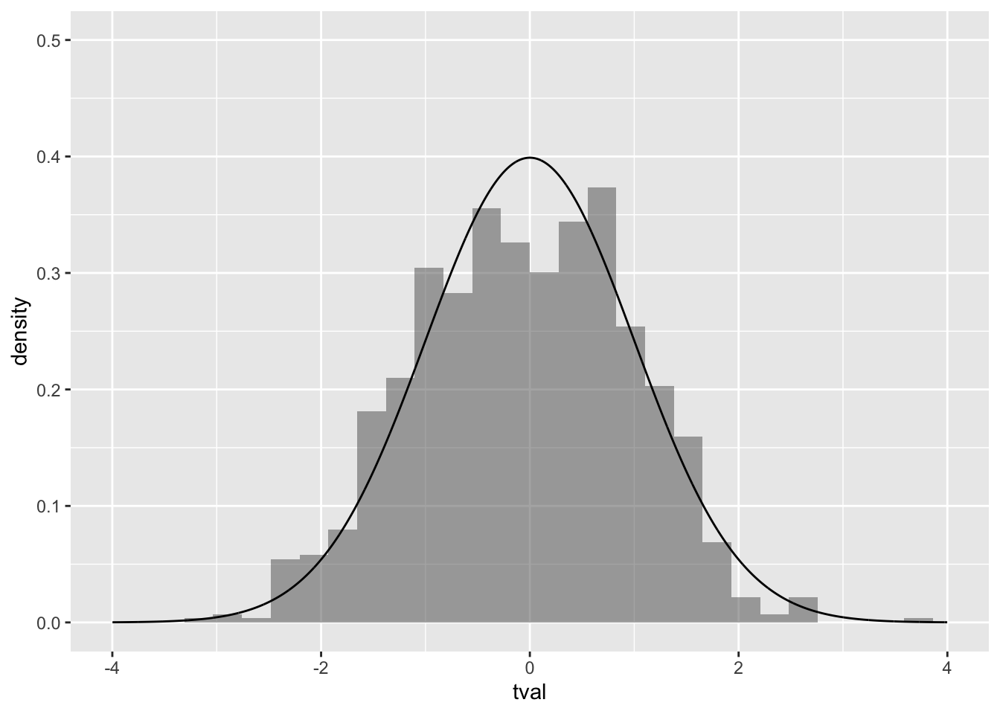

set.seed(2000)
library(AER)
library(mosaic)
library(broom)8 現代的仮定のもとでの最小二乗法
前節において以下の仮定を置いていた.
- \((x_i,y_i)\) は独立同一分布にしたがう.
- \(E[u_i]=0\) である.
- \(u_i\) と \(x_i\) は独立である.
- \(u_i\) は正規分布にしたがう.
これらの仮定を緩めることで分析にどのような影響をあたえるのかを見ていく.
仮想的に以下のモデルを考える.
data("Journals", package = "AER")
df <- Journals |>
mutate(citeprice = price / citations,
age = 2000 - foundingyear) |>
select(subs, citeprice, age)
inspect(df)
#>
#> quantitative variables:
#> name class min Q1 median Q3 max
#> 1 subs integer 2.000000000 52.000000 122.500000 268.250000 1098.00000
#> 2 citeprice numeric 0.005222803 0.464495 1.320513 3.440171 24.45946
#> 3 age numeric 4.000000000 17.750000 27.000000 37.250000 156.00000
#> mean sd n missing
#> 1 196.866667 204.528847 180 0
#> 2 2.548455 3.466444 180 0
#> 3 33.094444 25.711484 180 0作図すると以下である.
gf_point(log(subs) ~ log(citeprice), data = df)
8.1 正規性の仮定について
十分な観測値が得られるばあい, \(u_i\) が正規分布にしたがっていないくても, 中心極限定理定理より, 最小二乗法推定量は正規分布に近似できる.
simdata <- function(N = 100) {
x <- rnorm(N, mean = 10, sd = 1)
u <- runif(N, -10, 10)
y <- 1 + x + u
data.frame(x, y)
}
siml <- do(1000) * {
lm(y ~ x, data = simdata(100)) |> tidy() |>
filter(term == "x") |> select(estimate, std.error) |>
mutate(tval = (estimate - 1) / std.error)
}gf_dhistogram(~tval, data = siml) |>
gf_dist("norm")
ここの係数ゼロのティー検定について, ライブラリ AER を導入して coeftest を用いればよい.
fm1 <- lm(log(subs) ~ log(citeprice) * log(age), data = df)
coeftest(fm1, df = Inf)
#>
#> z test of coefficients:
#>
#> Estimate Std. Error z value Pr(>|z|)
#> (Intercept) 3.632828 0.304532 11.9292 < 2.2e-16 ***
#> log(citeprice) -0.903750 0.163211 -5.5373 3.071e-08 ***
#> log(age) 0.370551 0.089910 4.1213 3.767e-05 ***
#> log(citeprice):log(age) 0.133897 0.045194 2.9627 0.003049 **
#> ---
#> Signif. codes: 0 '***' 0.001 '**' 0.01 '*' 0.05 '.' 0.1 ' ' 1ただ十分なデータのもとではティー値のままでもよい.
同様に複数制約の場合, エフ検定統計量に制約の数を乗じた統計量が 自由度が制約数のカイ二乗分布にしたがうことが知られている. これをR で実施するには waldtest を用いればよい.
fm0 <- lm(log(subs) ~ log(citeprice), data = df)
waldtest(fm0, fm1, test = "Chisq")オプション test を付けなければエフ検定を実施する.
waldtest(fm0, fm1)これは anova と同じである.
anova(fm0, fm1)複数制約の検定としてLM検定というのもある.
lmt <- lm(I(resid(fm0)) ~ log(age) * log(citeprice), data = df) |>
rsquared() * nrow(df)
lmt
#> [1] 27.10345
1 - pchisq(lmt, df = 1)
#> [1] 1.928534e-078.2 誤差項と説明変数が独立の仮定について
また \(u_i\) と \(x_i\) は独立でなく, \(u_i\) と \(x_i\) が無相関という弱い条件のもとでも, 一致推定量であることが知られている.
R でロバスト分散を推定するにはパッケージ AER を導入するのが簡単である. 次のコマンド coeftest を実行すればよい.
coeftest(fm1, vcov = vcovHC)
#>
#> t test of coefficients:
#>
#> Estimate Std. Error t value Pr(>|t|)
#> (Intercept) 3.632828 0.390029 9.3142 < 2.2e-16 ***
#> log(citeprice) -0.903750 0.149116 -6.0607 8.03e-09 ***
#> log(age) 0.370551 0.124687 2.9719 0.003374 **
#> log(citeprice):log(age) 0.133897 0.041993 3.1886 0.001693 **
#> ---
#> Signif. codes: 0 '***' 0.001 '**' 0.01 '*' 0.05 '.' 0.1 ' ' 1STATA と同じにするには
coeftest(fm1, vcov = vcovHC(fm1, type = "HC1"))
#>
#> t test of coefficients:
#>
#> Estimate Std. Error t value Pr(>|t|)
#> (Intercept) 3.632828 0.373886 9.7164 < 2.2e-16 ***
#> log(citeprice) -0.903750 0.143685 -6.2898 2.439e-09 ***
#> log(age) 0.370551 0.119340 3.1050 0.002218 **
#> log(citeprice):log(age) 0.133897 0.040268 3.3251 0.001075 **
#> ---
#> Signif. codes: 0 '***' 0.001 '**' 0.01 '*' 0.05 '.' 0.1 ' ' 1としなければならない.
またティー分布でなく正規分布とすることもできる.
coeftest(fm0, vcov = vcovHC, df = Inf)
#>
#> z test of coefficients:
#>
#> Estimate Std. Error z value Pr(>|z|)
#> (Intercept) 4.766212 0.055545 85.808 < 2.2e-16 ***
#> log(citeprice) -0.533053 0.034474 -15.463 < 2.2e-16 ***
#> ---
#> Signif. codes: 0 '***' 0.001 '**' 0.01 '*' 0.05 '.' 0.1 ' ' 1複数の係数についての検定は waldtest を実行すればよい.
waldtest(fm0, fm1, vcov = vcovHC)先の結果はエフ検定であるが, カイ二乗検定を実施するには以下を実施すればよい.
waldtest(fm0, fm1, vcov = vcovHC, test = "Chisq")8.3 分散不均一のシミュレーション
simdata <- function(N = 100) {
x <- rnorm(N, mean = 10, sd = 1)
u <- exp(x) * rnorm(N)
y <- 1 + x + u
data.frame(x, y)
}
siml <- do(1000) * {
lm(y ~ x, data = simdata(100)) |> tidy() |>
filter(term == "x") |> select(estimate, std.error) |>
mutate(tval = (estimate - 1) / std.error)
}通常の回帰分析を実施すると, 係数が不偏であっても, 正しく分散が推計できていないことが明らかである.
gf_dhistogram(~tval, data = siml) |>
gf_lims(x = c(-4, 4), y = c(0, 0.5)) |>
gf_dist("norm")
加重最小自乗法を実施したシミュレーションを実施する.
siml <- do(1000) * {
lm(y ~ x, data = simdata(100), weight = 1 / exp(x)) |> tidy() |>
filter(term == "x") |> select(estimate, std.error) |>
mutate(tval = (estimate - 1) / std.error)
}加重最小自乗法を実施すると, 正規分布に近似できる.
gf_dhistogram(~tval, data = siml) |>
gf_lims(x = c(-4, 4), y = c(0, 0.5)) |>
gf_dist("norm")
ロバスト分散を利用したシミュレーションを実施する.
siml <- do(1000) * {
lm(y ~ x, data = simdata(100)) |>
coeftest(vcov = hccm) |> tidy() |>
filter(term == "x") |> select(estimate, std.error) |>
mutate(tval = (estimate - 1) / std.error)
}ロバスト分散を利用した場合, 正規分布に近似できる.
gf_dhistogram(~tval, data = siml) |>
gf_lims(x = c(-4, 4), y = c(0, 0.5)) |>
gf_dist("norm")
8.4 分散均一の検定
R では以下のように実施すればよい.
bptest(fm1)
#>
#> studentized Breusch-Pagan test
#>
#> data: fm1
#> BP = 16.39, df = 3, p-value = 0.0009431ホワイト検定は以下で実施する.
wht <- lm(I(resid(fm1)^2) ~ fitted(fm1) + I(fitted(fm1)^2), data = df) |>
rsquared() * nrow(df)
wht
#> [1] 1.905067
1 - pchisq(wht, df = 2)
#> [1] 0.3857625